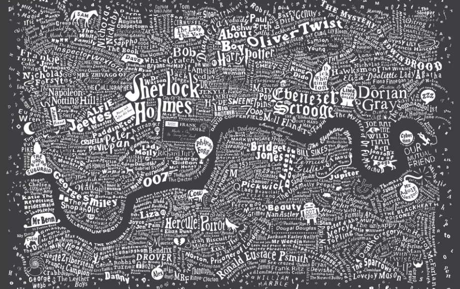

London, city of Sherlock, Harry Potter, Dorian Gray and many others…
Our client is a mid size real estate company trying to enter into airbnb business in London. Their new revenue model is to build or purchase flats and houses, renovate them and then list on the website. They also want to expand the business to Budapest Hungary soon.
Our task is to help them on the pricing issue by using the historical data publicly available online.
library(doParallel)
library(ggplot2)
library(data.table)
library(caret)
library(glmnet)
library(dplyr)
library(ggthemes) #fivethirtyeight plots
library(skimr) #magical summaries
library(gridExtra) #combine plots
library(stargazer) #checked a few coeffs
library(knitr)
library(kableExtra) #html formating
registerDoParallel(cores = 4)
knitr::opts_chunk$set(warning = FALSE)We need to get rid of some dublicates
data <- fread("data/airbnbdata/airbnb_london_workfile.csv", stringsAsFactors = TRUE)
data[, c("neighbourhood_cleansed", "cancellation_policy",
"usd_price_day", "property_type", "room_type") := NULL]
data[, neighbourhood_cleansed := NULL]
names(data)## [1] "usd_cleaning_fee" "f_property_type"
## [3] "f_room_type" "f_cancellation_policy"
## [5] "f_bed_type" "f_neighbourhood_cleansed"
## [7] "p_host_response_rate" "n_accommodates"
## [9] "n_bathrooms" "n_review_scores_rating"
## [11] "n_number_of_reviews" "n_guests_included"
## [13] "n_reviews_per_month" "n_extra_people"
## [15] "n_minimum_nights" "n_beds"
## [17] "n_days_since" "d_24hourcheckin"
## [19] "d_airconditioning" "d_breakfast"
## [21] "d_buzzerwirelessintercom" "d_cabletv"
## [23] "d_carbonmonoxidedetector" "d_cats"
## [25] "d_dogs" "d_doorman"
## [27] "d_doormanentry" "d_dryer"
## [29] "d_elevatorinbuilding" "d_essentials"
## [31] "d_familykidfriendly" "d_fireextinguisher"
## [33] "d_firstaidkit" "d_freeparkingonpremises"
## [35] "d_freeparkingonstreet" "d_gym"
## [37] "d_hairdryer" "d_hangers"
## [39] "d_heating" "d_hottub"
## [41] "d_indoorfireplace" "d_internet"
## [43] "d_iron" "d_keypad"
## [45] "d_kitchen" "d_laptopfriendlyworkspace"
## [47] "d_lockonbedroomdoor" "d_lockbox"
## [49] "d_otherpets" "d_paidparkingoffpremises"
## [51] "d_petsallowed" "d_petsliveonthisproperty"
## [53] "d_pool" "d_privateentrance"
## [55] "d_privatelivingroom" "d_safetycard"
## [57] "d_selfcheckin" "d_shampoo"
## [59] "d_smartlock" "d_smokedetector"
## [61] "d_smokingallowed" "d_suitableforevents"
## [63] "d_tv" "d_washer"
## [65] "d_washerdryer" "d_wheelchairaccessible"
## [67] "d_wirelessinternet" "price"data[, price := as.numeric(price)]Since these properties will be renovated new listings, they will not have any review or review related scores. Later on we can build a new model for the existing ones. However, we will drop them for this initial study.
Cleaning of the properties will be outsourced to another company and it will be a standardized process. In the data when the cleaning fee is missing it is actually zero. And sometimes this feature is misused by the oweners. We will not use this feature as well.
data[, c("n_review_scores_rating", "n_reviews_per_month",
"n_number_of_reviews", "n_days_since", "p_host_response_rate", "usd_cleaning_fee") := NULL]Do we have missing variables?
sapply(data, function(x) sum(is.na(x))) %>%
pander()| f_property_type | f_room_type | f_cancellation_policy | f_bed_type |
|---|---|---|---|
| 0 | 0 | 0 | 0 |
| f_neighbourhood_cleansed | n_accommodates | n_bathrooms | n_guests_included |
|---|---|---|---|
| 0 | 0 | 237 | 0 |
| n_extra_people | n_minimum_nights | n_beds | d_24hourcheckin |
|---|---|---|---|
| 0 | 0 | 167 | 0 |
| d_airconditioning | d_breakfast | d_buzzerwirelessintercom | d_cabletv |
|---|---|---|---|
| 0 | 0 | 0 | 0 |
| d_carbonmonoxidedetector | d_cats | d_dogs | d_doorman | d_doormanentry |
|---|---|---|---|---|
| 0 | 0 | 0 | 0 | 0 |
| d_dryer | d_elevatorinbuilding | d_essentials | d_familykidfriendly |
|---|---|---|---|
| 0 | 0 | 0 | 0 |
| d_fireextinguisher | d_firstaidkit | d_freeparkingonpremises |
|---|---|---|
| 0 | 0 | 0 |
| d_freeparkingonstreet | d_gym | d_hairdryer | d_hangers | d_heating | d_hottub |
|---|---|---|---|---|---|
| 0 | 0 | 0 | 0 | 0 | 0 |
| d_indoorfireplace | d_internet | d_iron | d_keypad | d_kitchen |
|---|---|---|---|---|
| 0 | 0 | 0 | 0 | 0 |
| d_laptopfriendlyworkspace | d_lockonbedroomdoor | d_lockbox | d_otherpets |
|---|---|---|---|
| 0 | 0 | 0 | 0 |
| d_paidparkingoffpremises | d_petsallowed | d_petsliveonthisproperty | d_pool |
|---|---|---|---|
| 0 | 0 | 0 | 0 |
| d_privateentrance | d_privatelivingroom | d_safetycard | d_selfcheckin |
|---|---|---|---|
| 0 | 0 | 0 | 0 |
| d_shampoo | d_smartlock | d_smokedetector | d_smokingallowed |
|---|---|---|---|
| 0 | 0 | 0 | 0 |
| d_suitableforevents | d_tv | d_washer | d_washerdryer | d_wheelchairaccessible |
|---|---|---|---|---|
| 0 | 0 | 0 | 0 | 0 |
| d_wirelessinternet | price |
|---|---|
| 0 | 0 |
n_bathrooms (237), n_beds (167) have missing values.
We will use median value for the bathrooms assuming that 1 bathroom should be available. Number of beds should be equal to the number of accommodate for the missing ones.
data[, n_bathrooms :=
ifelse(is.na(n_bathrooms), median(n_bathrooms, na.rm = T), n_bathrooms)]
data[, n_beds :=
ifelse(is.na(n_beds), n_accommodates, n_beds)]
#a few observations with strange prices. Illogical and outscope numbers create noise to our business question.
data <- data[data$price > 10, ]
data <- data[data$price < 700, ]#Below is the small gadget i wrote to study my variables in detail.
sapply(data, function(x) if (class(x) == 'factor') {unique(x)
} else if (class(x) != 'factor') {skim(x)})#take another look
glimpse(data)How is the average price changing district by district?
data[, .(count = .N,
avg_price = round(mean(price)),
median_price = round(median(price)),
min = min(price),
max = max(price)),
by = f_neighbourhood_cleansed][order(-avg_price)] %>%
filter(count > 1000)## f_neighbourhood_cleansed count avg_price median_price min max
## 1 Kensington and Chelsea 3327 145 120 20 695
## 2 Westminster 5202 137 110 19 691
## 3 Camden 3623 112 95 15 666
## 4 Hammersmith and Fulham 2689 104 82 11 699
## 5 Wandsworth 2602 96 75 15 650
## 6 Islington 3478 94 80 11 654
## 7 Southwark 3241 86 69 11 699
## 8 Lambeth 3176 84 65 15 682
## 9 Brent 1537 81 60 15 669
## 10 Hackney 4492 80 65 11 500
## 11 Tower Hamlets 5431 77 60 12 650
## 12 Newham 1120 70 50 14 572
## 13 Haringey 1402 69 50 12 570
## 14 Lewisham 1448 61 48 15 400Now time to select a random district… We will select a random district and compare it with the entire London. This will also help us to analyze several different districts without changing the code. However, I will set a seed below for reproducability of this one
#a dplyr way...
set.seed(22) #reproduce
selection_table <- data %>%
group_by(f_neighbourhood_cleansed) %>%
tally() %>%
filter(n > 1000) %>%
arrange(desc(n))
lottery_winner <- as.vector(sample(selection_table$f_neighbourhood_cleansed, 1))
lottery_winner## [1] "Islington"Hello My District… This is the area where Sherlock Holmes lived.
district <- data %>%
filter(f_neighbourhood_cleansed == lottery_winner)## Distribution of price by type
plot1 <- ggplot(data, aes(price, fill = f_room_type)) +
ggtitle("Price Density, London") +
geom_density(alpha = 0.3) + theme_fivethirtyeight()
## Boxplot of price by room type
plot2 <- ggplot(data, aes(f_room_type, price)) +
ggtitle("Price in London") +
geom_boxplot()+ theme_fivethirtyeight()
plot3 <- ggplot(district, aes(price, fill = f_room_type)) +
ggtitle("Price Density, District") +
geom_density(alpha = 0.3) + theme_fivethirtyeight()
## Boxplot of price by room type
plot4 <- ggplot(district, aes(f_room_type, price)) +
ggtitle("Price in District") +
geom_boxplot()+ theme_fivethirtyeight()
grid.arrange(plot1, plot2, plot3, plot4, ncol=2, nrow=2)Distributions are similar. We see the skewness to the right and how price changes by property type.
plot5 <- ggplot(data, aes(x = factor(n_accommodates), y = price, fill = factor(f_property_type))) +
geom_boxplot(alpha=0.8) +
scale_x_discrete(name = "Accomodate Persons") +
ggtitle("Price Per Accommodate in London") + theme_fivethirtyeight()
plot6 <- ggplot(data = data) +
geom_bar(data = data,
aes(x = factor(n_accommodates),
color = f_room_type, fill = f_room_type)) +
ggtitle("# Accomodations and property types London") +
xlab('Accommodates') + theme_fivethirtyeight()
grid.arrange(plot5, plot6, nrow=2)Accommodate is an important feature we will need to pay attention.
There is a wide range of price. So there must be some factors which make differences. Now I will leave the path and enter into a random forest to see which variables it picks.
This will be a heuristic approach. Because I am lacking the domain knowledge in this business, I will use random forest to pick the most important (highly likely) variables for me. It is probabilistic, however, it can be a better start than knowing nothing at all.
# Fit random forest
RFtrainControl <- trainControl(method = "cv",
number = 2,
verboseIter = TRUE)
set.seed(1234)
RFmodel <- train(
price ~ .,
tuneLength = 1,
data = district,
method = 'ranger',
na.action = na.omit,
importance = 'impurity',
trControl = RFtrainControl)## Aggregating results
## Selecting tuning parameters
## Fitting mtry = 9, splitrule = variance, min.node.size = 5 on full training setvarImp(RFmodel)## ranger variable importance
##
## only 20 most important variables shown (out of 94)
##
## Overall
## n_accommodates 100.000
## f_room_typePrivate room 68.106
## n_beds 63.804
## n_bathrooms 47.317
## n_guests_included 24.744
## f_property_typeHouse 16.489
## n_minimum_nights 15.975
## d_tv 13.948
## f_cancellation_policystrict 13.741
## n_extra_people 13.692
## d_familykidfriendly 12.316
## d_laptopfriendlyworkspace 5.564
## d_cabletv 5.243
## d_dryer 5.018
## d_elevatorinbuilding 4.859
## d_indoorfireplace 4.723
## d_buzzerwirelessintercom 4.602
## d_carbonmonoxidedetector 4.592
## d_shampoo 4.329
## d_iron 4.285Accommodates looks like the most important variable indeed. And for example being kid friendly might have some effect. Below we can see its plot, error bars added to emphasise the level of uncertainty.
library(psych)
stats <- describeBy(data$price,list(data$f_room_type,data$d_familykidfriendly), mat=TRUE,digits=2)
stats$se = stats$sd/sqrt(stats$n)
names(stats)[names(stats) == 'group1'] = 'Type'
names(stats)[names(stats) == 'group2'] = 'KidFriendly'
stats_2 <- describeBy(data$price,list(data$f_room_type,data$d_tv), mat=TRUE,digits=2)
stats_2$se = stats_2$sd/sqrt(stats_2$n)
names(stats_2)[names(stats_2) == 'group1'] = 'Type'
names(stats_2)[names(stats_2) == 'group2'] = 'TV'
limits = aes(ymax = mean + (1.96*se), ymin=mean - (1.96*se))
dodge = position_dodge(width=0.9)
apatheme=theme_bw()+
theme(panel.grid.major=element_blank(),
panel.grid.minor=element_blank(),
panel.border=element_blank(),
axis.line=element_line())
p7 <- ggplot(stats, aes(x = Type, y = mean, fill = KidFriendly))+
geom_bar(stat='identity', position=dodge)+
geom_errorbar(limits, position=dodge, width=0.25)+
ylab('Mean Price')+
theme_fivethirtyeight() + apatheme +
scale_fill_grey()
p8<- ggplot(stats_2, aes(x = Type, y = mean, fill = TV))+
geom_bar(stat='identity', position=dodge)+
geom_errorbar(limits, position=dodge, width=0.25)+
ylab('Mean Price')+
theme_fivethirtyeight() + apatheme +
scale_fill_grey()
grid.arrange(p7, p8, ncol=2)Playing our card to be-kid-friendly, we can increase our profits. Maybe the families with small kids are ready to pay more than young couples and singles. We will try these interactions during modeling.
london <- data[complete.cases(data)]
district <- data.table(district)
district <- district[complete.cases(district)]partitioning to training and test sets
training_ratio <- 0.7
set.seed(1234)
train_indices <- createDataPartition(y = london[["price"]],
times = 1,
p = training_ratio,
list = FALSE)
london_train <- london[train_indices, ]
london_test <- london[-train_indices, ]set.seed(1234)
train_indices <- createDataPartition(y = district[["price"]],
times = 1,
p = training_ratio,
list = FALSE)
district_train <- district[train_indices, ]
district_test <- district[-train_indices, ]fit_control <- trainControl(method = "cv", number = 10)set.seed(1234) # The most simple one for benchmarking or comparing...
model_1_london <- train(price ~ n_accommodates,
data = london_train,
method = "lm",
trControl = fit_control)set.seed(1234)
model_1_district <- train(price ~ n_accommodates,
data = district_train,
method = "lm",
trControl = fit_control)set.seed(1234) # Adding some more variables from our exploration to see the effects
model_2_london <- train(price ~ n_accommodates + n_beds + f_room_type +
n_minimum_nights + n_guests_included + n_bathrooms,
data = london_train,
method = "lm",
trControl = fit_control)set.seed(1234) #
model_2_district <- train(price ~ n_accommodates + n_beds + f_room_type +
n_minimum_nights + n_guests_included + n_bathrooms,
data = district_train,
method = "lm",
trControl = fit_control)set.seed(1234) # load the variables from random forest varible importance list and some interactions and polynomials
model_3_london <- train(price ~ n_accommodates + n_beds + f_room_type + n_bathrooms + n_guests_included +
n_minimum_nights + f_property_type + n_extra_people + f_cancellation_policy +
d_tv + d_familykidfriendly + d_cabletv + d_laptopfriendlyworkspace + d_dryer +
d_elevatorinbuilding + d_indoorfireplace + d_buzzerwirelessintercom
+ d_carbonmonoxidedetector + d_hangers + d_internet +
n_accommodates^2 + n_beds^2 + f_property_type*d_familykidfriendly +
n_accommodates*d_tv + n_accommodates*d_familykidfriendly + n_accommodates*d_cabletv,
data = london_train,
method = "lm",
trControl = fit_control)set.seed(1234) #load the variables from random forest varible importance list and some interactions and polynomials
model_3_district <- train(price ~ n_accommodates + n_beds + f_room_type + n_bathrooms + n_guests_included +
n_minimum_nights + f_property_type + n_extra_people + f_cancellation_policy +
d_tv + d_familykidfriendly + d_cabletv + d_laptopfriendlyworkspace + d_dryer +
d_elevatorinbuilding + d_indoorfireplace + d_buzzerwirelessintercom
+ d_carbonmonoxidedetector + d_hangers + d_internet +
n_accommodates^2 + n_beds^2 + f_property_type*d_familykidfriendly +
n_accommodates*d_tv + n_accommodates*d_familykidfriendly + n_accommodates*d_cabletv,
data = district_train,
method = "lm",
trControl = fit_control)tune_grid <- expand.grid("alpha" = 1,
"lambda" = seq(0.028, 0.036, 0.001))
set.seed(1234) # lasso.
model_4_london <- train(price ~ .,
data = london_train,
method = "glmnet",
trControl = fit_control,
metric = "RMSE",
preProcess = c("center","scale"),
tuneGrid = tune_grid,
tuneLength=3)tune_grid <- expand.grid("alpha" = 1,
"lambda" = seq(0.25, 0.35, 0.01))
set.seed(1234) # lasso
model_4_district <- train(price ~ .,
data = district_train,
method = "glmnet",
trControl = fit_control,
metric = "RMSE",
tuneGrid = tune_grid)Cross Validation RMSEs
model_1_london_rmse_cv <- model_1_london$results[["RMSE"]]
model_2_london_rmse_cv <- model_2_london$results[["RMSE"]]
model_3_london_rmse_cv <- model_3_london$results[["RMSE"]]
model_4_london_rmse_cv <- min(model_4_london$results[["RMSE"]])
model_1_district_rmse_cv <- model_1_district$results[["RMSE"]]
model_2_district_rmse_cv <- model_2_district$results[["RMSE"]]
model_3_district_rmse_cv <- model_3_district$results[["RMSE"]]
model_4_district_rmse_cv <- min(model_4_district$results[["RMSE"]])How do these models perform on test sets and the full sample? I have run all the predictions and listed them in a table below. These are RMSE scores:
| model | London.CV | London.FULL | London.Test | District.CV | District.FULL |
|---|---|---|---|---|---|
| 1 | 56.89 | 56.86 | 56.77 | 44.86 | 56.89 |
| 2 | 51.88 | 51.91 | 52.01 | 43.33 | 52.51 |
| 3 | 50.71 | 50.7 | 50.8 | 41.3 | 52.43 |
| 4 | 47.97 | 47.91 | 48.1 | 40.98 | 52.01 |
| District.Test |
|---|
| 44.87 |
| 41.26 |
| 41.38 |
| 40.45 |
lasso (number 4) is giving better RMSE results on test set, for both London and the district. I would use Lasso for both of them.
District is a representative sample of London. Price is distributed very similarly. However, when we try the model of the district to predict the entire London, we do a poor job. District is a small sample and its model cant capture the variation for the entire city.
Cross Validation and Test Set RMSE scores are almost identical. It is logical since the process of CV is to create several test sets and they are coming from the same data using random sampling.
We would use these models also for predicting 2018 prices for London. Because we think that 2018 will be similar to 2017. On the other hand Budapest prices are very different. I wouldn’t predict the price by using a model from London. It will overshoot first of all… Having said that, I can use the experience I gained from London to build new models for other cities. Especially during the process of picking the right coefficients or variables.
In my second iteration I would also use one of the variables I dropped at the beginning which are related to reviews. Probably reviews and review scores would have some effect if engineered carefully. Reviews, review scores are more touching to behavioural science and tend to contain more noise.
I would also be curious about how rating scores change over time.
Now we can grow a tree and see its results.
trctrl <- trainControl(method = "cv", number = 10)
set.seed(1234)
model_tree1_london <- train(price ~ .,
data = london_train, method = "rpart",
metric = "RMSE",
trControl=trctrl,
tuneLength = 20,
tuneGrid = data.frame(cp=seq(0.001, 0.01, 0.01))) #0.00001, 0.001, 0.0001
model_tree1_london## CART
##
## 36090 samples
## 61 predictor
##
## No pre-processing
## Resampling: Cross-Validated (10 fold)
## Summary of sample sizes: 32481, 32481, 32481, 32481, 32480, 32482, ...
## Resampling results:
##
## RMSE Rsquared MAE
## 48.24238 0.5944131 29.1418
##
## Tuning parameter 'cp' was held constant at a value of 0.001postResample(london_test$price, predict(model_tree1_london, newdata = london_test, type = "raw"))## RMSE Rsquared MAE
## 48.7178292 0.5904734 29.4880805A regression tree is giving quite promising results for the london test set. RMSE is already as good as the Lasso.
Lets get the result also for our district:
trctrl <- trainControl(method = "cv", number = 10)
set.seed(1234)
model_tree1_district <- train(price ~ .,
data = district_train, method = "rpart",
metric = "RMSE",
trControl=trctrl,
tuneLength = 20,
tuneGrid = data.frame(cp=seq(0.003, 0.0036, 0.0001)))
model_tree1_district## CART
##
## 2436 samples
## 61 predictor
##
## No pre-processing
## Resampling: Cross-Validated (10 fold)
## Summary of sample sizes: 2193, 2193, 2192, 2192, 2194, 2191, ...
## Resampling results across tuning parameters:
##
## cp RMSE Rsquared MAE
## 0.0030 39.65540 0.6178117 25.71466
## 0.0031 39.65540 0.6178117 25.71466
## 0.0032 39.64336 0.6180021 25.75005
## 0.0033 39.64210 0.6180115 25.74834
## 0.0034 39.64587 0.6178014 25.79159
## 0.0035 39.64611 0.6176206 25.79206
## 0.0036 39.75832 0.6160279 25.86119
##
## RMSE was used to select the optimal model using the smallest value.
## The final value used for the model was cp = 0.0033.Here we can see RMSE change vs complexity parameter of the tree
plot(model_tree1_district)postResample(district_test$price, predict(model_tree1_district, newdata = district_test, type = "raw"))## RMSE Rsquared MAE
## 41.1274597 0.6239557 25.4295441Again the tree is doing almost as good as lasso.
# Fit random forest to district
RFtrainControl <- trainControl(method = "cv",
number = 2,
verboseIter = TRUE)
set.seed(1234)
model_RF_district <- train(
price ~ .,
tuneLength = 1,
data = district_train,
method = 'ranger',
na.action = na.omit,
importance = 'impurity',
trControl = RFtrainControl)## Aggregating results
## Selecting tuning parameters
## Fitting mtry = 9, splitrule = variance, min.node.size = 5 on full training setRFmodel## Random Forest
##
## 3478 samples
## 61 predictor
##
## No pre-processing
## Resampling: Cross-Validated (2 fold)
## Summary of sample sizes: 1739, 1739
## Resampling results across tuning parameters:
##
## splitrule RMSE Rsquared MAE
## variance 38.78331 0.6647095 24.45589
## extratrees 39.31677 0.6621379 24.93305
##
## Tuning parameter 'mtry' was held constant at a value of 9
## Tuning
## parameter 'min.node.size' was held constant at a value of 5
## RMSE was used to select the optimal model using the smallest value.
## The final values used for the model were mtry = 9, splitrule =
## variance and min.node.size = 5.postResample(district_test$price, predict(model_RF_district, newdata = district_test, type = "raw"))## RMSE Rsquared MAE
## 38.3658077 0.6890767 24.1235225This Random Forest RMSE is the best so far. It is giving better results than the others. However, it is difficult to explain it to our business stakeholders.
We can plot the trees and explain the linear regression coeffs more effectively to the people. RF model wont enjoy that much clarity. That’s because I would prefer to tweak and play with my linear models and lasso with an objective to get closer to the Random Forest.
Later on I can try the same coeffs to Budapest. I would use the model we built for entire London to work on Budapest. The model we used for the district is less likely to be generalized.
I would like to close this small paper with the plot below showing Lasso Model predictions to show the errors. Predictions are getting worse and worse as the real rental price increases: Predicting less than it is. Similar trend is visible for the predictions of other models as well.
ggplot(london_test, aes(price, model_4_london_pred_test - price, col = f_room_type)) + geom_point() +
geom_abline(intercept = 0, slope = 0) + theme_fivethirtyeight()